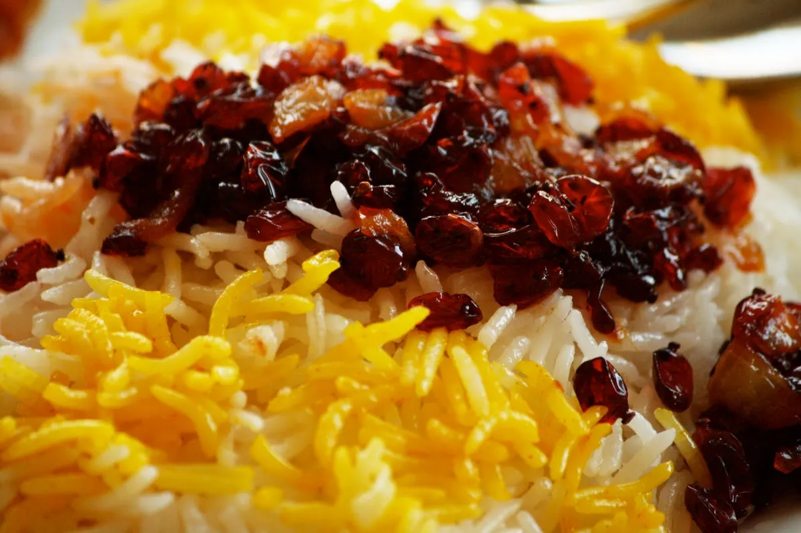

Zereshk Polo Recipe

Description
Zereshk Polo literally means “Barberry rice”. In Farsi, Polo / Polo
generally is considered when rice is mixed with other ingredients, which
in this case rice And barberries to make “Zereshk Polo”.
Ingredients
- Rice
- Barberry (Zereshk)
- Saffron
Steps
Rice:
-
Fully wash and then soak the rice in cool water, add 4 tablespoons of
salt, set aside for at least an hour.
-
In a large non-stick pot bring 8 cups of water to a rapid boil on
medium-high heat. Drain the rice and pour into boiling water. Bring
water back to a boil for about 7 minutes. Test to see if the rice is
ready. Rice grains should be hard in the centre and soft on the outside.
-
Drain the rice in a colander and rinse with cool water a few times.
-
Wash the rice pot with water. Add oil or butter to the bottom of the pot
and place flatbread such as Lavash or pitta. With a large spatula return
the parboiled rice into the pot over the bread, building it into a
pyramid shape away from the sides of the pot. In order to release the
steam make 4-5 holes in the rice with the bottom of the spatula.
-
Cook for 7-10 minutes on medium heat until the rice starts steaming,
pour 1/4 cup of water over the rice, cover, lower heat and steam the
rice for about 40-45 minutes.
Barberries:
-
Wash and rinse the barberries a few times, soak in cool water for 15
minutes, then drain (this prevents them from burning fast).
-
Place 2 tablespoon of butter in a small saucepan, add barberries to the
pan, heat it up on medium-low heat for 2 minutes.
-
Add 2 tablespoons of liquid saffron and pistachios with the rosewater,
then sugar to balance the sour taste of barberry.
-
When all mix thoroughly, don’t let them fry any longer than 30 seconds
so barberries don’t burn, remove from heat, and set aside.